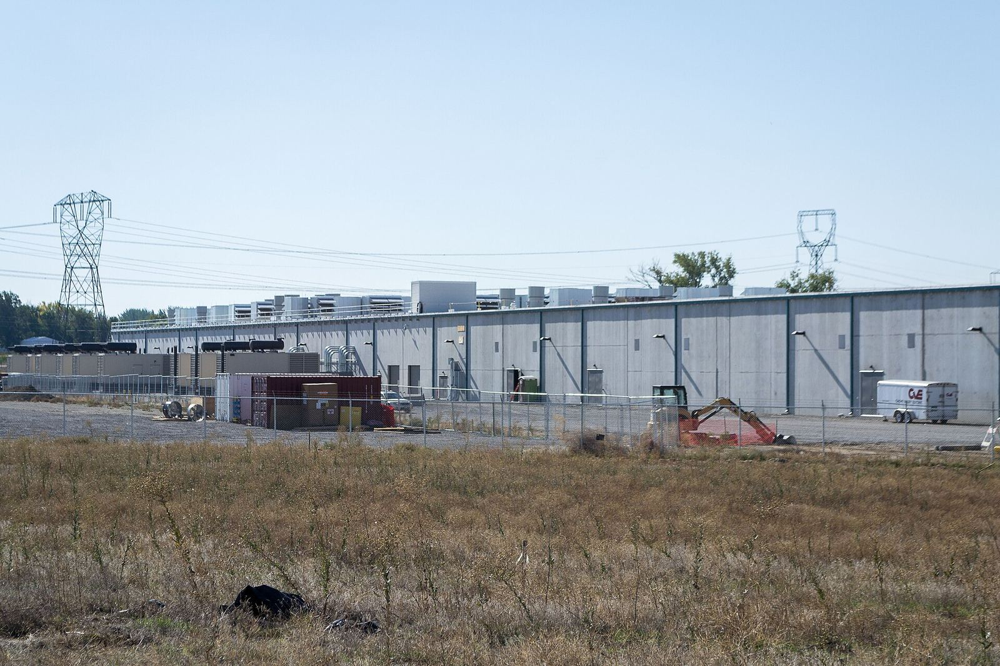

CoreWeave 公布 2026 年第三季度业绩：营收 36.61 亿美元，上年同期 13.65 亿美元；净亏损 7.09 亿美元；调整后经营利润 3.79 亿美元；截至 9 月 30 日收入 backlog 约 1,325 亿美元，并上调全年营收指引至 130 亿至 133 亿美元


CoreWeave, Inc.（纳斯达克代码：CRWV）于 2026 年 11 月 10 日发布截至 2026 年 9 月 30 日的第三季度财报。新闻稿列出：本季度营收 36.61 亿美元，上年同期为 13.65 亿美元；营业利润 2.07 亿美元，上年同期为 5,200 万美元；净亏损 7.09 亿美元，上年同期净亏损 1.10 亿美元；基本与稀释每股净亏损均为 1.27 美元，上年同期为 0.22 美元；净利息支出 8.46 亿美元，上年同期为 3.10 亿美元。非公认会计原则（non-GAAP）指标方面，调整后 EBITDA 为 22.56 亿美元，利润率 62%；调整后经营利润 3.79 亿美元；调整后净亏损 5.29 亿美元。截至 2026 年 9 月 30 日，收入 backlog 约为 1,325 亿美元。新闻稿脚注说明，该 backlog 包括剩余履约义务，以及公司估计将在已承诺客户合同下于未来确认为收入的其他金额，并均取决于交付与服务可用性等条件得到满足。
对 CoreWeave 而言，这是一个突破性的季度：营收环比增加超过 10 亿美元，调整后经营利润率提前一个季度达到两位数。
联合创始人、董事长兼首席执行官 Michael Intrator 在新闻稿中说：「对 CoreWeave 而言，这是一个突破性的季度：营收环比增加超过 10 亿美元，调整后经营利润率提前一个季度达到两位数。」他还表示，增长得到多种资金来源支持，包括以客户合同为支撑的融资、经营性现金流，以及「仅未来三个月内预计约 90 亿美元的客户预付款与保证金」。业务亮点方面，公司称本季度新增逾 200 兆瓦活跃电力，使活跃电力超过 1.7 吉瓦，自年初以来活跃规模翻倍；签约电力增加逾 900 兆瓦，至超过 4.6 吉瓦；国际签约电力超过 1.3 吉瓦，并提到印度、印度尼西亚与西班牙。
展望方面，公司将 2026 年全年营收指引上调至 130 亿至 133 亿美元；将全年调整后经营利润指引上调至 12.75 亿至 13.75 亿美元，称中值较此前指引提高 26%；将全年资本支出指引调整为 370 亿至 390 亿美元，把此前 350 亿至 390 亿美元区间的下限上调，并解释是因为预期将更早部署基础设施并交付给客户。公司还预计 2026 年末活跃电力超过 1.85 吉瓦，将 2026 年末年化营收运行速率指引上调至 200 亿至 210 亿美元，并预计 2026 年第四季度利息支出为 10.5 亿至 11.5 亿美元。新闻稿含前瞻性陈述声明，并注明未提供与调整后经营利润指引相对应的公认会计原则等值或调节表。
摘记，不是官方媒体。营收、亏损、backlog、电力规模与全年指引均转述 CoreWeave 当日新闻稿；调整后指标为非公认会计原则口径，前瞻性陈述与指引可能变化，最终数字以向美国证券交易委员会提交的文件为准。